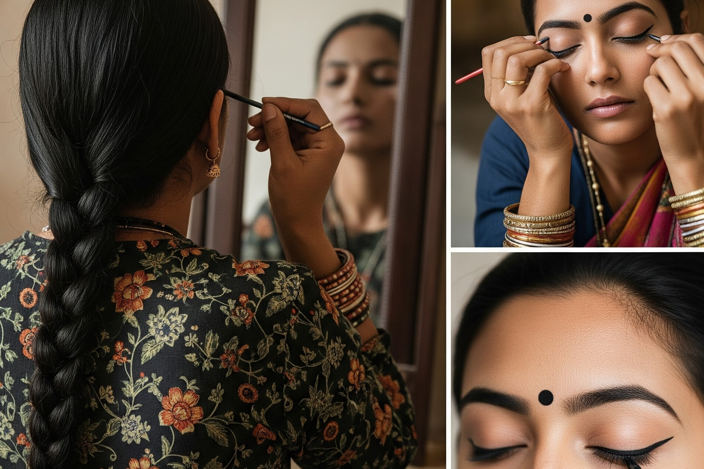

How to achieve a flawless Odia Bridal Eye Makeup : Guide for the Perfect Look
Posted on June 10, 2025 by Smita

As an Odia bridal artist who's transformed hundreds of brides across Rayagada, Bhubaneswar, and Cuttack, I know the eyes are the soul of our traditional bridal look. The humid climate of Odisha makes achieving flawless eye makeup challenging, but with the right techniques and products, you can create stunning eyes that last through all wedding ceremonies. Here's my complete guide to creating perfect Odia bridal eyes for 2025.
Table of Contents
Key Takeaway
The secret to flawless Odia bridal eyes lies in layering: start with eye primer, use waterproof products, set with powder, and finish with a setting spray. For traditional looks, modernize chandan dots with pearl accents and pair with gold eyeshadow that complements our temple jewelry.
Step-by-Step Odia Bridal Eye Makeup Guide
After creating looks for brides from Puri to Koraput, I've perfected this 8-step process:
Prep and Prime
Odia bridal secret: Apply chilled cucumber slices for 5 minutes to reduce puffiness. Follow with an eye primer specifically formulated for humid climates.
Local Recommendations:
- Kay Beauty Eye Primer (available at Bhubaneswar beauty stores)
- Swiss Beauty Longwear Primer (budget-friendly)
- Homemade alternative: Mix rice starch with aloe vera gel
Apply Base Eyeshadow
For traditional Odia looks, start with gold or champagne shades that complement temple jewelry. Coastal brides in Puri often prefer lighter golds, while Rayagada brides favor deeper antique golds.
Popular Shades:
- Light Gold: Huda Beauty Rose Quartz Palette
- Antique Gold: Swiss Beauty HD Eyeshadow in "Royal Gold"
- Rose Gold: Kay Beauty Eyeshadow in "Pink Champagne"
Define the Crease
Use warm brown matte shades to add depth. Blend upward toward the brow bone for an eye-opening effect. This technique works beautifully for hooded eyes common among Odia brides.
Apply Kajal
Line both upper and lower waterlines with smudge-proof kajal. For traditional Odia looks, extend the lower line slightly downward at the outer corner.

Create Winged Liner
Using waterproof liquid liner, create a delicate wing that extends from the outer corner. For Bhubaneswar's modern brides, I often create a subtle double wing that incorporates chandan dots.
Modern Chandan Accents
Instead of thick white lines, create delicate pearl-accented dots along the lower lash line. Use a fine-tip liquid liner for precision.
Dot Placement Techniques:
- Classic: Three dots under each eye
- Modern: Pearl dots tracing the wing
- Bold: Small chandan motifs at outer corners
Apply False Lashes
Choose lashes that enhance without overwhelming. Apply with waterproof lash glue, focusing on the outer corners for a lifted effect.
Highlight Inner Corners
Finish with pearl or gold highlight at inner corners and brow bone. This traditional touch brightens the eyes beautifully.
Smudge-Proof Kajal Brands for Odia Brides
After testing countless brands in Odisha's humidity, these kajals truly withstand our climate:
| Brand | Price Range | Availability in Odisha | Lasting Power |
|---|---|---|---|
| Kay Beauty Defining Kohl | ₹300-400 | Nykaa stores in Bhubaneswar & Cuttack | 8+ hours |
| Faces Canada Magnet Eyes | ₹200-300 | Most beauty stores in Rayagada | 6-7 hours |
| Lakmé Eyeconic | ₹150-250 | Widely available across Odisha | 5-6 hours |
| Maybelline Colossal | ₹200-300 | All major cities | 7+ hours |
Local Artist Tip
For traditional Odia brides in Rayagada, I layer kajal: first apply a creamy kajal, then set with black eyeshadow using an angled brush. This technique survives even the most emotional wedding moments!
Making Eye Makeup Last in Odisha's Climate
Our coastal humidity and emotional ceremonies demand extra staying power. Here's how I ensure eye makeup lasts:
Humidity-Proofing Checklist
- Primer is non-negotiable: Creates a barrier against oils and humidity
- Cream then powder: Layer cream products with matching powder shadows
- Waterproof everything: Mascara, liner, and even brows
- Setting spray technique: Spray after each eye makeup layer
- Blotting papers: Keep handy to absorb oils without disturbing makeup
Regional Adaptations
Different areas of Odisha require specialized approaches:
- Coastal (Puri/Ganjam): Use anti-humidity primers and matte finishes
- Western (Rayagada/Koraput): Focus on hydration to combat dryness
- Urban (Bhubaneswar/Cuttack): Add pollution protection with antioxidant-rich products
Best False Eyelashes for Odia Brides
The perfect lashes enhance without competing with intricate eye makeup:
Lash Application Tips
"Measure lashes against your eye and trim from the outer edge. Apply glue and wait 30 seconds until tacky. Use tweezers to place at the center first, then secure inner and outer corners." - Smita, Rayagada Bridal Artist
Traditional Odia Eye Makeup Styles
Modern interpretations of our heritage looks for 2025:
Puri Temple Style
- Soft gold eyeshadow
- Delicate winged liner
- Three pearl-accented chandan dots
- Paired with temple jewelry
Rayagada Royal
- Antique gold smokey eye
- Bolder winged liner
- Chandan dots tracing wing
- Dramatic criss-cross lashes
Bhubaneswar Modern
- Rose gold eyeshadow
- Double-winged liner
- Pearl-accented chandan motifs
- Wispy natural lashes
Traditional Odia
- Classic gold shadow
- Thick kajal rimmed eyes
- White chandan lines
- Natural lash enhancement
Final Tips for Perfect Bridal Eyes
Having adorned brides from the temples of Puri to modern Bhubaneswar venues, my final advice:
Odia Bridal Eye Essentials
- Schedule a makeup trial during similar weather conditions
- Bring reference photos but remain open to artist suggestions
- Have touch-up products in your bridal emergency kit
- Remember to blink naturally during photography
- Embrace happy tears - waterproof products have you covered!
Your bridal eyes should reflect both tradition and personal style. At Smita's Glam World, we specialize in creating customized Odia bridal looks that honor heritage while celebrating your unique beauty. Book a consultation at our Rayagada studio to create your perfect eye look!
Remember
The most beautiful bridal eyes are those filled with joy. However perfectly your makeup is applied, your happiness will always be your most radiant feature. May your wedding day be filled with the same warmth and beauty that defines our Odia culture!